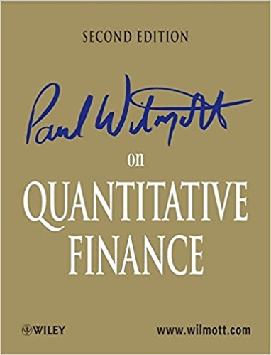
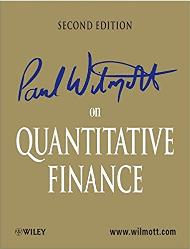

Quant Book
\[ \textbf{Finance is the study of exchanging values across time and space under uncertainty.} \]
This book project, which consists of four subjects: Finance, Mathematics, Statistics, and Computer Science, is tailored specifically to prepare someone for a quant career. It originated from my general belief of the hierarchy of solving a problem — problems are solved at strategic, tactical, and operational levels.
Microeconomics and Macroeconomics explain the driving forces of capital markets, from a legislator’s perspective. Accounting and Corporate Finance take a closer and necessary look at these forces, from a different angle. Stochastic Calculus and Asset Pricing provide with a set of tools and ideas that enables us to strategically model one of the central problems in Quantitative Finance.
Generally speaking, there are two paths to solve a quantitative finance problem at the tactical level: the mathematical way and the statistical way. There are only two pieces of math we need to know: Analysis, in particular measure-theoretical probability and differential equations; and Linear Algebra, with functional analysis in mind. Statistics, on the other hand, should start with Statistical Experiment De-sign, from which we learn how to collect data for statistical models. Next,the study of Random Variables and Stochastic Processes introduce the building blocks of the statistical “pillbox”, with Mathematical Statistics the “scaffold”. Once the “pillbox” is ready, we are equipped to tackle our problems using Machine Learning, which is essentially a collection of statistical models and optimization algorithms.
Computer Architecture and Operating System are respectively about the“hardware” and “software” of a single computer. The interaction of multiple computers is understood in Computer Network. Once we are comfortable with these concepts, we will be able to use Data Structure and Algorithms to solve problems at the operational level, and use C and or Java to implement our ideas. I am aware that it can take a while, and even multiple advanced degrees, to finish this curriculum, but let’s remember the motto from the Leipzig Gewand-haus Orchestra: “Res severa est verum gaudium”.
Xi Tan
West Lafayette, IN
October, 2013
 
